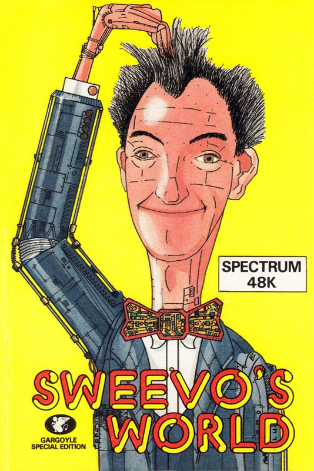
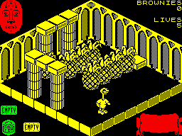

Sweevo's World


{kind=link}

| Publisher: | Gargoyle Games |
| Price: | £7.95 |
| Year: | 1986 |
| Source: | CRASH, Issue 25 |

Imagine a world full of strange beings and equally strange objects. A world overpopulated with oversized fruit, deadly to the touch. A world shown in full isometric 3D perspective, similar to Ultimate’s Knight Lore and Alien 8 — Sweevo’s World? Not quite, for only if Sweevo can successfully contend with all the dangers Knutz Folly has to offer, can it possibly be renamed as such.
As you may have gleaned from the two previous previews, Knutz Folly is an artificial planetoid, built by the highly deranged Baron Knutz for his seemingly estranged wife Hazel, before he went totally out of his tree. A number of decidedly strange life forms live in this strange environment, all as weird as their creator. Each group of organisms must be disposed of in a particular way — the Horrible Little Girls, or Minxes, can be mashed by dropping teddies on their heads, for instance. The Minxes and Goose Stepping Dictators are extremely dangerous and quick with it, so should you enter a room containing either, beware!

Widgers and Geese on the other hand, are harmless, but expendable all the same. Brownies sit quietly about the planet and can be collected for extra ‘Brownie’ points. Further marks are also awarded for tidiness at the end of the game.
Sweevo has five lives and one is lost every time he tires. Such a state arises whenever he is poked from behind (literally) or knocked over four times from running into a static object such as a skull or piece of fruit. Sweevo’s current physical state is shown in the top left of the screen and is represented by a face, looking very much like our very own Graeme Kidd minus cranial fluff. As his energy decreases, the face becomes more and more sorrowful looking, until it turns into a skull, when he finally kicks it. If energy is running a bit low, Sweevo can sneak up behind one of the eight Geese which stump around the playing area. If he gives them a big enough fright, they lay a Golden Erg (ouch!) which is a source of extra energy.
Hidden away in nearly two hundred screens split into four levels is a whole range of puzzles of differing difficulty. Each puzzle, once solved, gives the player useful objects such as tin cans. These are then used to solve further puzzles. However, in order to complete the game, you must also eradicate all life forms... and tidy up after you!
CRITICISM
‘I’m not a great fan of Gargoyle’s previous offerings, such as Tir Na Nog and Dun Darach, although I can appreciate why they are so popular. Sweevo’s World on the other hand, appeals to me greatly, with its humorous and unusual approach. The puzzles are, on the whole, very logical, but because they are so straightforward it makes them that much harder. Graphically, Sweevo’s is stunning, with superbly defined and animated characters, and an impressive overall speed. The sound is also exceptional — the music on the title screen is some of the best I’ve heard issuing forth from the Spectrum. There’s not much more to say about Sweevo’s other than it’s brilliant and if you don’t buy it or try it you won’t know what you’re missing.’
‘Knight Lore made a big impression, mainly I felt because of the revolutionary 3D graphics. Gargoyle’s latest offering is very derivative graphically — but the game content is very different... Sweevo’s World is the logical progression from Knight Lore with even better piccies, a very interesting inlay, nice sound and, of course the GAME! There’s not much I can say about the graphic style: except I’ve not seen anything quite like these characters before! Sweevo’s is certainly something special. Don’t get the idea that it’s as serious as previous Gargoyle releases; it’s basically a nice bit of fun even if, like me, you don’t feel up to solving any problems.’
‘Up until now most of Gargoyle’s products have been arcade adventures which can be very daunting to us lesser mortals, but with the advent of Sweevo’s World all that has changed. If you can remember, way back in the mists of time (about a year ago in fact), Ultimate came out with two graphically stunning games, Knight Lore and Alien 8. Gargoyle have improved on that almost perfect formula and brought us a graphically superb game which is immense fun to play. The speed at which the game operates is breathtaking, and leaves Fairlight standing still, literally. If all these arcade adventures have been plaguing you recently and you’re in the mood for a bit of honest fun, then I doubt you could find a better alternative than Sweevo’s World.’
COMMENTS
| Control keys: | Q, W, E, R, T to move ‘left’, Y, U, I, O, P to move ‘up’, A, S, D, F, G to move ‘down’, H, J, K, L, ENTER to move ‘right’ and bottom row to pick up/drop |
| Joystick: | Kempston, Interface 2 and Cursor |
| Keyboard play: | Very responsive |
| Use of colour: | Single colour display to avoid attribute problems |
| Graphics: | Exceptionally good, fast 3D isometric display |
| Sound: | Excellent title screen music, although it can prove irritating |
| Skill levels: | One |
| Screens: | 184 |
| General rating: | A novel and humorous approach to the Ultimate style of game |
| Use of computer: | 90% |
| Graphics: | 95% |
| Playability: | 96% |
| Getting started: | 94% |
| Addictive qualities: | 95% |
| Value for money: | 95% |
| Overall: | 95% |